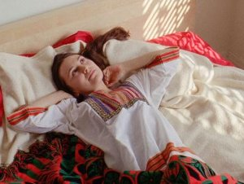

Ouroboros

Basma AlsharifFR / PS / BE / QA 2017
77 min – Arab, English
German Premiere
DOP: Ben Russell – E: Basma Alsharif
S: Federico Chiari – M: Yann
Gourdon – P+Sales: momento-films
With Diego Marcon, Neemah Abu Ghenas, Jessica Bellinger,
Coleman Collins
The film moves
through seven discrete segments, all but the last titled
with a time of day: a prologue (dawn) and epilogue (dawn) set in
Palestine; four chapters following a nameless man (played by
Italian
artist and filmmaker Diego Marcon) from Los Angeles (noon) through
Matera in Southern Italy (dusk); the California desert (twice
named:
night, briefly, then dusk again); a sprawling Breton chateau
(noon);
and finally a musical coda à la Claire Denis’ BEAU TRAVAIL (1999),
which both condenses and explodes everything that came before it.
Palestine is both here, onscreen, as occupied land and in these
other
spaces, each of which draws out some array of concerns regarding
the idea of Palestine. (Phil Coldiron, Cinema-Scope)
I wanted to play
with sound and language through the collective
telling of a fictional love story set in a Middle East devoid of
political
context. It was meant to be an experiment with details alluding to
sites,
histories, and factual characteristics describing various regions
of the
Levant, vaguely weaving in religious narratives. (Basma
Alsharif).
sunday 8 oct 8.30 pm werkstattkino
Basma Alsharif * in 1983 in Kuwait of Palestinian origins, Basma Alsharif is an artist and filmmaker working between cinema and installation. She directed several short films including Everywhere Was The Same (2007), Home Movies Gaza (2013) and A Field Guide to Ferns (2015). Ouroboros is her first feature film.
basmalsharif.com
Films Home Movies Gaza 2013 – O, Persecuted 2014 – A Field Guide To Ferns 2015